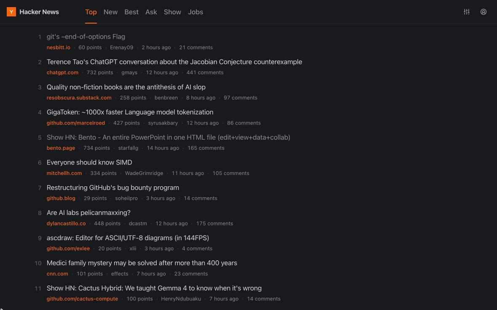

Hacker News,
just better.
I got frustrated with modern's lack of maintenance and decided to build my own. Open news.ycombinator.com and easyhn takes over the page.

What changes
-
Lists you can actually scan
The url, score, author, age and comment count on every story, laid out so the page is easy to read.
-
Threads without the squint
Readable line lengths, nesting you can follow, and collapsible comments so you can fold up the parts you're done with.
-
Built for the keyboard
Move around and read without touching the mouse. jk move o open c comments
-
Nothing leaves your browser
easyhn restyles the HTML Hacker News already sends you. There's no API and no server in between. No account, no tracking, no pro tier.
-
Open source
easyhn is MIT-licensed and lives on GitHub. Spot a bug or want something done differently? Send a PR.
Free & open source · MIT